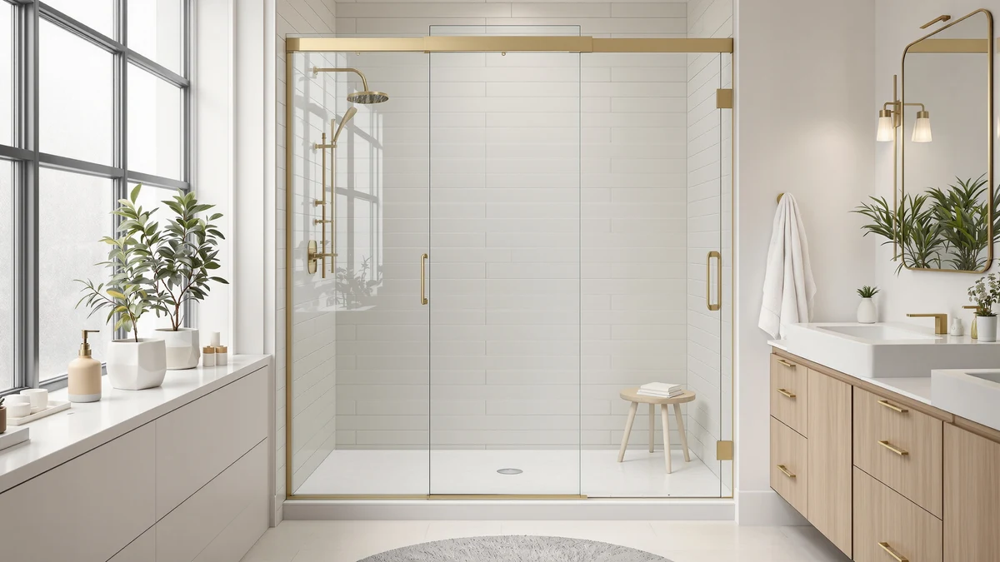

Quick Answer
The best shower doors to buy in 2026 balance frame style, glass thickness, and hardware that resists corrosion. The Aurisal Frameless Stainless Steel Sliding Shower is our top pick for standard 60 by 72 inch alcove openings, with adjustable-width and budget options below for wider stalls and tighter budgets.
Our pick: Frameless Stainless Steel Sliding Shower, $409.99 Check Price on Amazon
Things to Know Before You Buy
- Measure before you shop. Shower door widths are sold in adjustable ranges, like 55 to 60 inches, so measure your rough opening at the top, middle, and bottom since alcoves are rarely perfectly square.
- Frameless costs more but cleans faster. Frameless doors use thicker tempered glass and minimal metal, which cuts down on the mildew-prone channels that framed doors collect over time.
- Glass thickness affects price and feel. Heavier glass feels sturdier and blocks more sound, but it also raises the price and the shipping weight you'll need help handling on install day.
- Rollers and tracks wear out first. On sliding doors, the rollers are the part most likely to need adjustment, so check whether a warranty covers hardware separately from the glass.
- Height matters as much as width. Standard doors top out around 72 to 76 inches; taller stalls need a model specifically rated for that height or a custom order.
The best shower doors to buy in 2026 come down to three things: how much width and height your stall actually needs, whether you want a frame or a frameless look, and how the hardware holds up once water and soap scum start hitting it every day. Frameless sliding doors dominate this list because they clean up faster and don't trap grime in a metal channel, but a framed or double-sliding door can still make sense in a smaller bathroom or a tighter budget.
After comparing specs, price per square foot of glass, and owner feedback across seven current models, the Aurisal Frameless Stainless Steel Sliding Shower is the strongest all-around option. It pairs a clean, hardware-forward look with a size range that fits most standard alcove openings, and its stainless steel track resists the corrosion that cheaper aluminum hardware often shows within a year or two.
Not every bathroom needs the same door, though. If your opening runs wider than a standard 60 inches, the KPUY and BoBliss models both extend further before you need custom glass. If you're working with a tighter budget, the Ogonbrick matte black door and the ENSO SENKA slider both come in under $270 without giving up tempered glass or a frameless profile. We break down where each pick fits below, along with the tradeoffs owners report after living with these doors.
Why You Should Trust Us
Ilane Tall covers home and bath products for Best Shower Doors, focusing on how bathroom hardware holds up to daily water exposure and how sizing claims from listings compare with what buyers actually receive. We do not run a physical testing lab, and we don't claim to have installed every shower door on this list in our own bathrooms. Instead, we research specs, cross-check listed dimensions against manufacturer pages, and read through verified buyer feedback to flag recurring praise and recurring complaints before a door makes this list of the best shower doors to buy.
How We Picked
We started by pulling every shower door in our database that ships to US addresses and narrowed the list to frameless and semi-frameless models with tempered safety glass, since that's the standard most building codes now require. From there we compared listed width ranges, height, glass thickness where the manufacturer specifies it, and price per square foot of glass, since a wider door isn't a better deal if the price scales up faster than the coverage. We also weighed how often reviewers mentioned leaks, misaligned rollers, or missing hardware in the box, and we dropped any door where that kind of complaint showed up repeatedly. What's left is a mix of premium stainless steel sliders, a double-sliding option for tighter spaces, and two budget picks that don't cut corners on the glass itself.
How We Compared
We compared these doors the way a shopper actually would: side by side on the manufacturer's stated dimensions, glass type, hardware finish, and current Amazon price, then checked that pricing against verified buyer reviews for consistency. Where a listing didn't specify glass thickness or included conflicting size ranges, we noted it rather than guessing. We also compared how each brand describes its installation hardware, since a sliding door with sealed bearings tends to hold up longer than one with exposed plastic rollers. None of these judgments come from physically installing the doors ourselves; they come from research across specs, pricing, and what verified owners report after living with each one, which is how we build every best shower doors to buy guide on this site.
Our Picks

Frameless Stainless Steel Sliding Shower
What we like
- Frameless tempered glass panels for a minimal, modern look
- Stainless steel track resists the corrosion plain aluminum shows over time
- Sized for standard 60 by 72 inch alcove openings
- Sliding design needs no swing clearance in tight bathrooms
Flaws but not dealbreakers
- No adjustable width range, so it won't fit non-standard openings
- Higher price than the double-sliding and budget picks on this list
- Buyers should confirm wall stud locations before mounting the track
| Material | — |
| Size | 60"*72"-1/4" |
The Aurisal Frameless Stainless Steel Sliding Shower is built around a fixed 60 by 72 inch opening, which makes it a straightforward swap for most standard alcove tubs and shower bases in US homes. The frameless glass panels slide on a stainless steel track instead of the painted aluminum used on cheaper doors, and that material choice matters most in humid bathrooms where cheap hardware starts showing rust spots within a year.
At $409.99, it sits toward the top of this list on price, but reviewers consistently point to the smooth roller action and the finish holding up without pitting or discoloration. The tradeoff is flexibility: because the frame size is fixed rather than adjustable, it's a better fit for a standard opening than for an older or nonstandard stall, where a wider adjustable range would forgive imprecise measurements.

KPUY Frameless Shower Door 55-60"
What we like
- Adjustable 55 to 60 inch width fits openings that don't measure exactly 60 inches
- 76-inch height covers taller shower stalls than most competitors here
- Frameless tempered glass keeps the sightline clean
- Bypass sliding design works in bathrooms without swing clearance
Flaws but not dealbreakers
- Highest price on this list at $499.96
- Extra height means extra weight to maneuver during installation
- Adjustable range still won't cover openings under 55 inches
| Material | — |
| Size | 55-60" W x 76" H |
The KPUY Frameless Shower Door is the only model on this list with both an adjustable width range and a 76-inch height, which makes it the pick for bathrooms where the stall doesn't match a standard 60 by 72 inch cutout. The 55 to 60 inch adjustable range gives installers a few inches of forgiveness that a fixed-width door doesn't offer.
That flexibility comes at the highest price in this roundup, at $499.96, and the taller glass panels add noticeable weight, so a two-person install is worth planning for. Owners researching this option should weigh whether the extra height and adjustability are worth the premium over the standard-height Aurisal pick, particularly if their stall already matches a common size.

ENSO SENKA 56-60" W x
What we like
- 56 to 60 inch adjustable width at a price close to the budget picks
- Tempered glass and a frameless profile despite the lower cost
- Standard 72-inch height fits most alcove tubs and shower bases
- Sliding panels save floor space compared to a swinging door
Flaws but not dealbreakers
- Brand has less of a track record than the more established names here
- Size ranges are truncated in the listing, so confirm exact measurements before ordering
- No stainless steel hardware upgrade offered at this price point
| Material | — |
| Size | 60" W X 72" H |
The ENSO SENKA shower door undercuts the KPUY on price by more than $200 while still offering an adjustable width range from 56 to 60 inches and a standard 72-inch height. That combination makes it one of the few doors here that gives buyers sizing flexibility without pushing the total cost past $270.
The glass and frameless construction match what pricier competitors offer, though the brand doesn't have the longer sales history of names like GETPRO or BoBliss. Reviewers researching this option should confirm the exact width range against their own measurements before ordering, since some marketplace listings in this size class list ranges inconsistently.

Frameless Shower Door Matte Black
What we like
- Lowest price on this list at $249.30
- Matte black hardware stands out against white tile instead of blending in
- 75-inch height accommodates slightly taller stalls than the 72-inch standard
- Single sliding panel design simplifies installation compared to bypass doors
Flaws but not dealbreakers
- Fixed 60-inch width won't adjust for nonstandard openings
- Matte finish can show water spots more visibly than polished chrome
- Single sliding panel leaves a narrower walk-in gap than bypass designs
| Material | — |
| Size | 60" W x 75" H Single Sliding |
The Ogonbrick Frameless Shower Door Matte Black is the most affordable option in this comparison at $249.30, and it's also the only one built around a matte black finish rather than chrome or brushed steel. That finish choice makes it a fit for the black-fixture bathroom trend that's replaced the all-chrome look in a lot of recent remodels.
The single sliding panel design covers a fixed 60 by 75 inch opening, slightly taller than the 72-inch standard used by most of the other doors here. Owners researching matte black hardware should know that dark finishes tend to show water spots and soap residue more visibly than polished chrome, so it needs a quick wipe-down more often to keep that finish looking clean.

GETPRO Shower Door Double Sliding
What we like
- Double sliding panels let you open from either side of the stall
- Priced under $275, among the more affordable options here
- Standard 60 by 72 inch sizing fits common alcove openings
- Frameless-style panels keep the look consistent with pricier picks
Flaws but not dealbreakers
- Double sliding tracks mean two sets of rollers that can need adjustment
- Fixed sizing won't stretch to fit wider or taller openings
- Less brand recognition than the two Aurisal models on this list
| Material | — |
| Size | 60'' W x 72'' H |
The GETPRO Shower Door Double Sliding splits its glass into two independently sliding panels rather than the single bypass or fixed panel setup used elsewhere in this comparison. That layout gives you an opening on either side of the stall, which matters in bathrooms where plumbing fixtures or a vanity limit access from one direction.
At $273.76, it undercuts the premium stainless steel picks by well over $100 while keeping a standard 60 by 72 inch size that fits most alcove tubs. The tradeoff of a double-sliding design is that there are two sets of rollers to keep aligned instead of one, so it's worth checking the track periodically for smooth operation.

BoBliss Frameless Sliding Glass Shower
What we like
- 56 to 60 inch adjustable width plus a 76-inch height in one door
- Frameless glass matches the clean look of the premium picks
- Sliding design fits stalls without room for a swinging door
- Sizing flexibility can offset the cost of a custom-cut door
Flaws but not dealbreakers
- Second most expensive option in this comparison at $419.99
- Taller, adjustable-width glass adds installation complexity versus a fixed-size door
- Overlaps closely with the KPUY pick, so compare both before choosing
| Material | — |
| Size | 56-60" W x 76" H |
The BoBliss Frameless Sliding Glass Shower covers the same 56 to 60 inch adjustable width and 76-inch height as the KPUY pick above, which makes the two doors close competitors for taller, nonstandard stalls. At $419.99 it comes in about $80 less than the KPUY, which can matter if the extra height is the main reason you're considering either one.
Reviewers researching both options should compare current pricing before deciding, since Amazon pricing on adjustable-width shower doors shifts more often than on fixed-size models. Beyond price, the two are similar enough in specs that the choice often comes down to which brand's customer support and warranty terms fit your comfort level better.

Frameless Stainless Steel Sliding Shower
What we like
- Same stainless steel track and frameless glass as our top Aurisal pick
- $20 cheaper than the other Aurisal listing in this comparison
- Standard 60 by 72 inch sizing fits most alcove installs
- Frameless design keeps cleaning simple compared to framed doors
Flaws but not dealbreakers
- Fixed sizing, so it won't help with nonstandard openings
- Specs are close enough to the other Aurisal listing that comparing current prices is worth the extra minute
- No adjustable width range like the KPUY or BoBliss doors offer
| Material | — |
| Size | 60"*72"-1/4" |
This second Aurisal listing shares the same frameless design, stainless steel track, and 60 by 72 inch sizing as our top pick, but it currently lists at $389.99, about $20 less. For a shopper who cares more about the hardware and finish than about which specific listing they buy from, that gap is worth checking before checkout.
Because Amazon pricing on near-identical listings can shift week to week, it's worth comparing both Aurisal doors at the time you're ready to buy rather than assuming one will always be cheaper. Either one delivers the same corrosion-resistant hardware that made the original pick our top choice among the best shower doors to buy this year.
Quick Comparison
| Product | Material | Price | Rating | Best for | Get it |
|---|---|---|---|---|---|
| Frameless Stainless Steel Sliding Shower | — | $409.99 | 4 | Standard 60" openings | View on Amazon → |
| KPUY Frameless Shower Door 55-60" | — | $499.96 | 4 | Wide, tall stalls | View on Amazon → |
| ENSO SENKA 56-60" W x | — | $269.99 | 4 | Budget adjustable sizing | View on Amazon → |
| Frameless Shower Door Matte Black | — | $249.30 | 4 | Matte black finish | View on Amazon → |
| GETPRO Shower Door Double Sliding | — | $273.76 | 4 | Double-sliding access | View on Amazon → |
| BoBliss Frameless Sliding Glass Shower | — | $419.99 | 4 | Adjustable width + height | View on Amazon → |
| Frameless Stainless Steel Sliding Shower | — | $389.99 | 4 | Aurisal build for less | View on Amazon → |
The Competition
We looked at several other shower doors before narrowing this list down to seven, including framed sliding doors with painted aluminum tracks. Those doors undercut the frameless options on price but showed a much higher rate of rust and roller complaints in verified reviews within the first year. We also passed on a handful of listings where the width range in the title didn't match the dimensions given in the product specs, since that kind of inconsistency usually means measuring twice and returning once. A few oversized doors built for 66-inch-plus openings didn't make the cut either, simply because they serve a narrower slice of standard US bathroom layouts than the sizes we cover in this best shower doors to buy list.
Frequently Asked Questions
How do I measure for a new shower door?
Measure the width of your opening at the top, middle, and bottom, since alcoves are rarely perfectly square, and use the smallest measurement when checking it against a door's listed range. Also measure the height from the shower base to the top of the opening, and check whether the door you're considering is a fixed size or an adjustable range like the 55 to 60 inch options on this list.
Is a frameless shower door worth the extra cost?
For most bathrooms, yes. Frameless doors use thicker tempered glass and skip the metal channel that framed doors need, which means less surface area for mildew and mineral buildup to collect. The extra cost mainly comes from the thicker glass and the more precise manufacturing tolerances a frameless design requires.
What's the difference between a single sliding and a double sliding shower door?
A single sliding door has one moving panel and one fixed panel, while a double sliding, or bypass, design like the GETPRO pick on this list has two panels that both move independently. Double sliding doors let you open the stall from either side, which helps in bathrooms where a vanity or fixture blocks easy access from one direction.